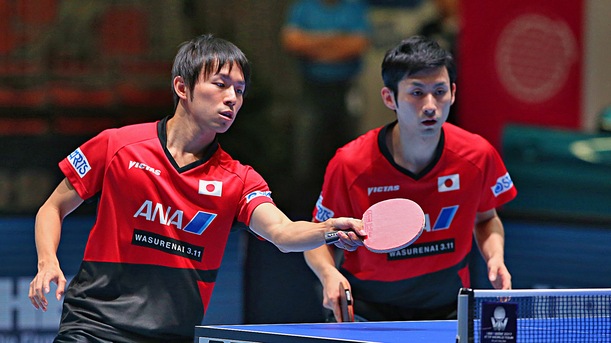

Japanese duo unstoppable in Linz, Men’s Doubles trophy secured
Jin Ueda and Koki Niwa brought their Seamaster 2017 ITTF World Tour Platinum, Hybiome Austrian Open campaign to a successful close on Sunday 24th September, defeating the German partnership of Ruwen Filus and Ricardo Walther across four games (11-7, 9-11, 11-9, 11-8) to arrest the Men’s Doubles title in Linz.
Reaching the final without dropping a single game in any of their previous matches in the competition, Jin Ueda and Koki Niwa entered the gold medal match in good form and were the strong favourites to excel.
However, awaiting the third seeded combination in the final was a tricky fixture against Ruwen Filus and Ricardo Walther.
The German duo stunned spectators with their performance in the semi-finals, beating Chinese opponents Fang Bo and Zhou Yu in dramatic fashion and the seventh seeds put in another positive display in the final.
Starting off the match with a promising showing in the opening game Jin Ueda and Koki Niwa looked on top form right from the beginning of the contest, but the Japanese partnership then lost their first game of the Men’s Doubles competition as Ruwen Filus and Ricardo Walther levelled the tie at one game apiece.
Very little separated the two pairings in the final as both sides demonstrated excellent teamwork, but in the end it was Jin Ueda and Koki Niwa who came out of the match victorious registering two consecutive game wins to seal the title in Linz (11-7, 9-11, 11-9, 11-8).
“We are very happy about the victory. Niwa is top 10 in the world, so personally there’s pressure for me to perform as well. We tried to play closer to the table and that worked well. Niwa played against Filus yesterday, he won but was still not confident against defenders, so today we played more aggressively” -Jin Ueda
Japanese celebrations in Linz as Jin Ueda and Koki Niwa receive their first gold medal as a partnership, adding to the seven Men’s Doubles titles previously collected by Ueda and Niwa with different partners.
Defeat for Ruwen Filus and Ricardo Walther in their first appearance in the final of a Platinum event, and for the third consecutive ITTF World Tour final the German duo have missed out on lifting the Men’s Doubles trophy.